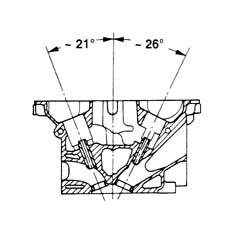
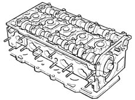

DESCRIPTION OF COMPONENTS
- Path
- Descriptions > 10 ENGINE > 1016 CYLINDER HEAD(S) > 1016E CYLINDER HEAD/S - VARIOUS OPERATIONS > DESCRIPTION OF COMPONENTS
- Kind
- system description
- Applies to
- engines: 2.4 20V; all production periods
- Interactive page
- https://sloeber94.github.io/elrnDB-lThss/en/#/609081
Applies to: engines: 2.4 20V; all production periods
CYLINDER HEAD
Specifications
Function
The cylinder head is a structural part of the engine that contains and supports the timing system components.
Composition
Structure
The cylinder head is the monolith type made from silicon and aluminium alloy.
The four valves per cylinder are fitted in the respective guides arranged in a 47° V formation driven by two camshafts through hydraulic tappets.

The valve guides are an interference fit in the cylinder head seats and the internal diameter is perfected after fitting using a special reamer.
The gasket between the cylinder head and the cylinder block/crankcase is made from aramide fibre and the head is never retightened throughout the entire life of the engine.
